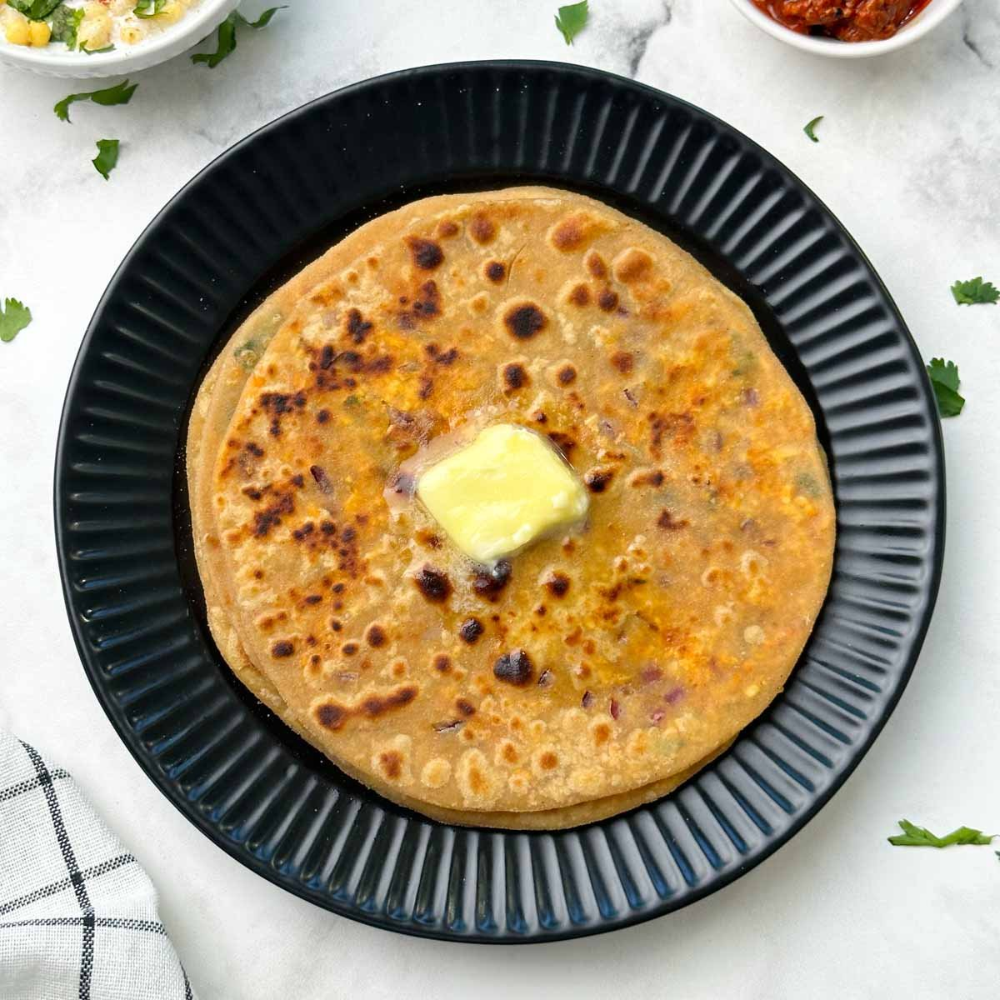

Paratha

Paratha is a popular Indian flatbread made from whole wheat flour, typically layered with ghee or oil and cooked on a griddle.
Ingredients:
- Whole wheat flour
- Water
- Salt
- Oil or ghee for cooking
Steps:
- In a mixing bowl, combine whole wheat flour, salt, and water to form a soft dough.
- Divide the dough into equal-sized balls and roll each ball into a circle on a floured surface.
- Brush the rolled-out dough with oil or ghee and fold it into a triangle or square, folding the edges to form layers.
- Roll out the folded dough into a flatbread again.
- Heat a griddle or skillet over medium heat and cook the paratha on both sides until golden brown, brushing with oil or ghee as needed.
- Remove from the griddle and serve hot with your favorite curry or condiments.